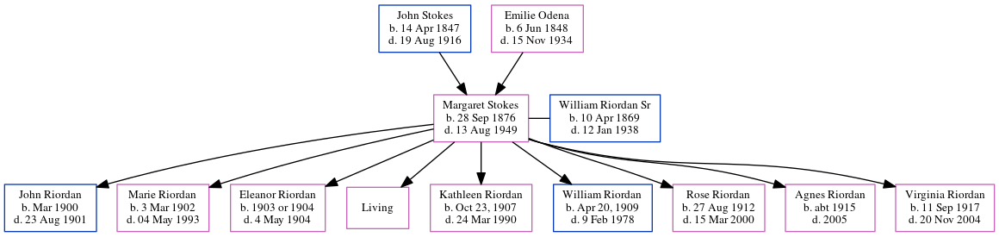

Margaret Louise Riordan (née Stokes) 1876 - 1949
[ Home ] | [ Calendar ] | [ Surnames Index ] | [ Census Index ] | [ Family History ]The child of John Stokes (a virginia philips told me that he owned a big grocery store and later a vinegar works. his last business was stokes marble company) and Emilie Odena, Margaret Stokes, the great-grandmother of Michele Copp (née Phillips), was born in Whitehall Street, SW, Atlanta, GA, USA on Sep 28, 18761,2,3,4,5,6,7,8,9,10 and married William Riordan Sr (with whom she had 9 children: John A, Marie Louise, Eleanor Josephine, Margaret Ann, Kathleen Cecilia, William Joseph, Rose Theresa, Agnes Elise and Virginia Rita Mae, along with 1 surviving child) in Atlanta, Fulton, Georgia, USA on May 31, 189911 (Fr Shadwell, Immaculate Conception Church).
During her life, she was living in Black Hall, Fulton, Georgia in 19001; in Atlanta Ward 3, Fulton, Georgia in 19102 and in 19203; in Atlanta, Fulton, Georgia in 19304 and in 19355; in Atlanta on Apr 1, 19405 following the death of her husband on Jan 12, 1938; in Atlanta8; and in Fulton6.
She died on Aug 13, 1949 in Atlanta, , Georgia6,7,8,9,10 (age at Death: 70) and was buried in Immaculate Conception, Greenwood, Georgia on Aug 16, 194910,12.
Parents
- John Wesley was born on Apr 14, 1847
- Emilie Mae was born on Jun 6, 1848
Children
- John A was born in Mar 1900
- Marie Louise was born on Mar 3, 1902
- Eleanor Josephine was born on Jan 1, 1903
- Kathleen Cecilia was born in Oct 23, 1907
- William Joseph was born in Apr 20, 1909
- Rose Theresa was born on Aug 27, 1912
- Agnes Elise was born c. 1915
- Virginia Rita Mae was born on Sep 11, 1917
Citations
- 1900 United States Federal Census Online publication - Provo, UT, USA: MyFamily.com, Inc., 2004.Original data - United States of America, Bureau of the Census. Twelfth Census of the United States, 1900. Washington, D.C.: National Archives and Records Administration, 1900. T623, 1854 rolls.
- 1910 United States Federal Census Online publication - Provo, UT, USA: The Generations Network, Inc., 2006. For details on the contents of the film numbers, visit the following NARA web page: NARA.Original data - United States of America, Bureau of the Census. Thirteenth Census of the Unit
- 1920 United States Federal Census Online publication - Provo, UT, USA: MyFamily.com, Inc., 2005. For details on the contents of the film numbers, visit the following NARA web page: NARA. Note: Enumeration Districts 819-839 on roll 323 (Chicago City.Original data - United States of America
- 1930 United States Federal Census Online publication - Provo, UT, USA: MyFamily.com, Inc., 2002.Original data - United States of America, Bureau of the Census. Fifteenth Census of the United States, 1930. Washington, D.C.: National Archives and Records Administration, 1930. T626, 2,667 rol
- 1940 United States Federal Census Ancestry.com Operations, Inc. (Age: 66; Marital Status: Widowed; Relation to Head of House: Head)
- Georgia Deaths, 1919-98 Online publication - Provo, UT, USA: The Generations Network, Inc., 2001.Original data - State of Georgia. Indexes of Vital Records for Georgia: Deaths, 1919-1998. Gerogia, USA: Georgia Heatlh Department, Office of Vital Records, 1998.Original data: State
- Global, Find A Grave Index for Burials at Sea and other Select Burial Locations, 1300s-Current Ancestry.com Operations, Inc.
- Newspapers.com Obituary Index, 1800s-current Ancestry.com Operations Inc
- OneWorldTree Online publication - Provo, UT, USA: MyFamily.com, Inc.
- Web: Georgia, Find A Grave Index, 1728-2012 Ancestry.com Operations, Inc.
- Georgia, Marriage Records From Select Counties, 1828-1978 Ancestry.com Operations, Inc.
- Atlanta, Georgia, U.S., Catholic Archdiocese of Atlanta Sacramental Records, 1840-1980 Ancestry.com Operations, Inc.
Notes
Grandma said her mother (Margaret Louise Stokes) was a wonderful seamstress and made all of their clothes including coats and suits.
Family Tree
Generated by ged2site. Last updated on Jun 6, 2024